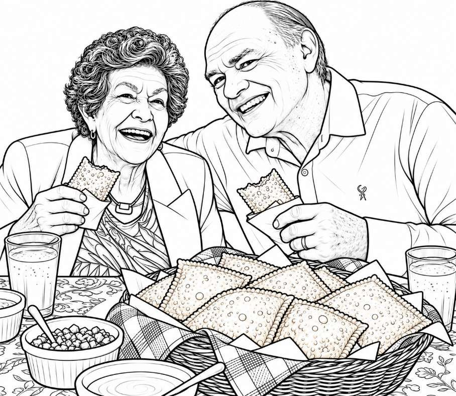

O Pastel de Carne - O Preferido do Filho Genivaldo
“Antes de conquistar seu lugar à mesa, o pastel de Genivaldo já tinha uma história para contar."

Nesta família, o futebol entrou pelo rádio, o nome veio na certidão e o pastel ganhou lugar cativo à mesa.
Genivaldo, o filho mais velho de Dona Zelinda, tem uma história que começa muito antes de seu pastel preferido chegar à cozinha. Antes de a receita conquistar seu lugar entre as lembranças da família, houve uma surpresa envolvendo o próprio nome.
Quando nasceu o primeiro filho, Dona Zelinda queria que o menino se chamasse Carlos Eduardo. Essa era a orientação que havia dado ao Sr. Arnaldo. Para ela, o nome já estava escolhido. Mas, naquela família, o coração também batia pelo Comercial Futebol Clube, de Ribeirão Preto.
Na época, o time vivia uma boa fase, e um jogador chamado Genivaldo vinha se destacando nas transmissões pelo rádio. Foi nesse cenário de futebol e torcida que o nome acabou tomando um rumo diferente do planejado por Dona Zelinda.
A surpresa veio quando ela leu a certidão de nascimento: em vez de Luis Eduardo, o menino estava registrado como Genivaldo.
Assim, o filho mais velho recebeu um nome que ficou ligado à paixão futebolística da família. Uma história que começou com uma escolha materna, passou pelo rádio e ganhou um desfecho inesperado no papel.
Anos depois, Genivaldo também teria seu nome associado a outro motivo de lembrança: o pastel de carne moída de Dona Zelinda. Com massa fina e dourada, recheio de carne bem refogada e cheiro-verde, a receita conquistou seu espaço entre os sabores preferidos do filho.
E a história, que começou com um nome inesperado, continua à mesa, onde as receitas de Dona Zelinda alimentam também as conversas e as recordações da família. O nome que Zelinda escolheu chegou à família uma geração depois com o neto Carlos Eduardo.